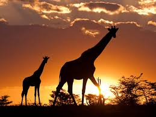

I am very interested in traveling to Africa because it is so different from anything that I have ever experienced. Most of my leisurely travel has been to the carribbean due to wanting to purely relax. However, in my position as a Global leader,I've been blessed with the opportunity to visit the UK, Germany and Japan. This gave me a taste for what it is like to explore a very different culture. Africa would be so different and I'd love to see the wildlife.

Source: Wikitravel
